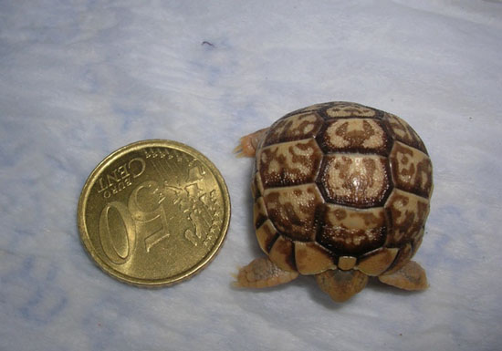

|
CRONOLOGÍA DEL
NACIMIENTO DE TESTUDO KLEINMANNI
Fernando Pérez, 2007
Recién nacida, los triángulos
pectorales aún no se distinguen.

Su primera comida.

Tras un par de días ya se distingue perfectamente el triangulo.
Un mes después de nacer y con 12 gr.,
el doble del peso de nacimiento.
|